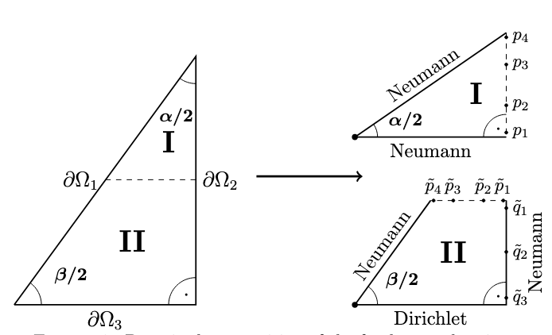

|
I am a research scientist at Fraunhofer IAIS. |

|
|
My research is focused on leveraging deep learning techniques to infer hidden dynamics in complex systems. Additionally, I am interested in the intersection of machine learning and maths. I also built LLM-based solutions for various industrial applications. |
|
David Berghaus ICLR 2025 (ICBINB) paper / code This paper presents a novel permutation invariant architecture that combines ideas from GNNs with self-attention algorithms and is tailored for Ramsey graphs. We use RL to try to find new Ramsey graphs (with no success! :D). |
|
David Berghaus, Kostadin Cvejoski, Patrick Seifner, Cesar Ojeda, Ramses J Sanchez NeurIPS 2024 paper / model This paper introduces a foundation model to infer the hidden dynamics of Markov Jump Processes in a zero-shot setting. It is useful for practioners in science because they do not have to train models for each new dataset. |
|
David Berghaus, Hartmut Monien, Danylo Radchenko Mathematics of Computation paper / code This paper presents a fast numerical algorithm to compute modular forms on noncongruence subgroups. |
|  |
David Berghaus, Robert Stephen Jones, Hartmut Monien, Danylo Radchenko Advances in Computational Mathematics paper In this paper we numerically compute the Laplace eigenvalues of various shapes with dihedral symmetry, to investigate their series expansions. |
|
David Berghaus, Bogdan Georgiev, Hartmut Monien, Danylo Radchenko Journal of Mathematical Analysis and Applications paper In this paper we prove that the Laplace eigenvalues of regular polygons admit an expansion that involves multiple zeta values. |
|
This website is based on the template of Jon Barron's website. Used with permission. |